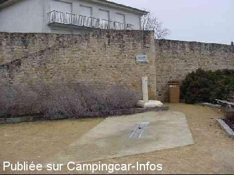
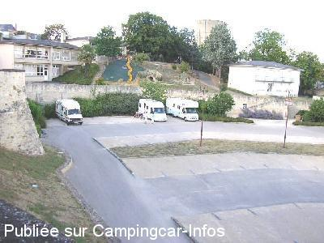

ASN = Aire de services avec stationnement nuit possible de :
THOUARS
(N° 836)
Accès/adresse :
Rue Félix Gelusseau
79100 THOUARS
79100 THOUARS
Latitude : (Nord) 46.97632° Décimaux ou 46° 58′ 34′′
Longitude : (Ouest) -0.2117° Décimaux ou 0° 12′ 42′′
Tarif : Gratuit
Type de borne : Autre
Services :


Autres informations :
7 emplacements
Tél Office du Tourisme : +33(0)549 661 765
htt://www.ville-thouars.fr/
Le 13/03/2013 par michele.be
Le 26/09/2011 par bil Août 2011
Le 26/09/2011 par bil Août 2011

Le 03/09/2006 par Jacky MILLON

Le 13/08/2005 par
de
Manou0606
le 21/10/2015 :
très déçus, en pente, parking trop petit, pas de place car plein de voitures, triste, sur béton, pas de possibilité de sortir des tables ou meme une chaise, donc, il faut rester enfermé dans le véhicule, les emplacements ne sont pas du tout adaptés, ce n'est pas un parking pour camping cars, nous ne sommes pas restés.
début octobre2015, hors saison, qu'est ce que ça doit etre l'été? du coup, pas de visite de la ville, mauvais accueil, on va ailleurs
très déçus, en pente, parking trop petit, pas de place car plein de voitures, triste, sur béton, pas de possibilité de sortir des tables ou meme une chaise, donc, il faut rester enfermé dans le véhicule, les emplacements ne sont pas du tout adaptés, ce n'est pas un parking pour camping cars, nous ne sommes pas restés.
début octobre2015, hors saison, qu'est ce que ça doit etre l'été? du coup, pas de visite de la ville, mauvais accueil, on va ailleurs
de
YvesObene
le 22/03/2015 :
L'aire est en pente. il faut prévoir les cales mais les emplacements sont très petits et on déborde vite dans les allées. Située à côté d'une école, les emplacements servent aussi aux voitures. il est donc bien difficile de stationner sur cette aire. Nous y avons passé une nuit agréable. Mais je continuerais mon chemin maintenant. trop difficile de se garer avec un plus de 7m
L'aire est en pente. il faut prévoir les cales mais les emplacements sont très petits et on déborde vite dans les allées. Située à côté d'une école, les emplacements servent aussi aux voitures. il est donc bien difficile de stationner sur cette aire. Nous y avons passé une nuit agréable. Mais je continuerais mon chemin maintenant. trop difficile de se garer avec un plus de 7m
de
l guy
le 05/08/2014 :
Bien pour visiter la ville et passer une nuit mais thouars devrait revoir cette aire pour bien nous accueillir car la ville est chargée d'histoire
Guy
Bien pour visiter la ville et passer une nuit mais thouars devrait revoir cette aire pour bien nous accueillir car la ville est chargée d'histoire
Guy
de
pierre.
le 25/11/2013 :
camping cariste de Thouars je me permet de signaler l ouverture tous les jours du marché couvert refait a neuf (du mardi au samedi 8h30 a 16h00)(dimanche de 8h00a 12h30)+ marché le mardi et vendredi.un Marche U sur la meme place (8h00/20h00 sf dimanche 8h00 13h00)
camping cariste de Thouars je me permet de signaler l ouverture tous les jours du marché couvert refait a neuf (du mardi au samedi 8h30 a 16h00)(dimanche de 8h00a 12h30)+ marché le mardi et vendredi.un Marche U sur la meme place (8h00/20h00 sf dimanche 8h00 13h00)
de
michele.be
le 13/03/2013 :
De passage le 4/03/2013 services gratuit, eau disponible.
Calme et proche du centre, idéale pour visiter.
J'attire l'attention sur le fait que la plate forme de services est au pied de l'escalier d'entrée de l'école primaire et de respecter l'indication du panneau, ne pas faire les services aux heures de passage des enfants
Un grand merci aux réalisateurs et la ville.
De passage le 4/03/2013 services gratuit, eau disponible.
Calme et proche du centre, idéale pour visiter.
J'attire l'attention sur le fait que la plate forme de services est au pied de l'escalier d'entrée de l'école primaire et de respecter l'indication du panneau, ne pas faire les services aux heures de passage des enfants
Un grand merci aux réalisateurs et la ville.
de
maryline Lucas
le 12/11/2012 :
Nous y sommes passés le 03/11 pour visiter Thouars. Aire bien placée pour la visite et agréable nous y sommes restés pour déjeuner. Merci à la commune de faire des efforts pour nous accueillir. De plus nous avons bien aimé la ville.
Nous y sommes passés le 03/11 pour visiter Thouars. Aire bien placée pour la visite et agréable nous y sommes restés pour déjeuner. Merci à la commune de faire des efforts pour nous accueillir. De plus nous avons bien aimé la ville.
de
djy36
le 15/07/2012 :
De passage à Thouars les 14 et 15 juillet, nous avons trouvé l'aire. Le cadre est sympathique, mais les emplacements et l'aire de vidange ne sont pas adaptés pour les camping-cars de + 7 mètres. Dommage
De passage à Thouars les 14 et 15 juillet, nous avons trouvé l'aire. Le cadre est sympathique, mais les emplacements et l'aire de vidange ne sont pas adaptés pour les camping-cars de + 7 mètres. Dommage
de
bil
le 26/09/2011 :
De passage le 9 Août, nous nous sommes arrêtés seulement pour les services, cadre agréable.
De passage le 9 Août, nous nous sommes arrêtés seulement pour les services, cadre agréable.
de
louloutte
le 07/04/2011 :
BONSOIR déjà merci à la municipalité de mettre cette aire gratuite à notre disposition, ce n' est pas partout que l' on trouve ça
nous sommes 6 cc, mais un peu obligé d' empiéter sur deux stationnement car place pas large, mais voilà cela ne gene en rien
a lire les com qui sont anciens, cela a l' air d' être calme
bien placé aux pieds des remparts
pour nous cela nous convient, mais il y aura tjs des exigents qui trouveront a redire !!!!!
parfait pour ce soir
encore merci à la commune
BONSOIR déjà merci à la municipalité de mettre cette aire gratuite à notre disposition, ce n' est pas partout que l' on trouve ça
nous sommes 6 cc, mais un peu obligé d' empiéter sur deux stationnement car place pas large, mais voilà cela ne gene en rien
a lire les com qui sont anciens, cela a l' air d' être calme
bien placé aux pieds des remparts
pour nous cela nous convient, mais il y aura tjs des exigents qui trouveront a redire !!!!!
parfait pour ce soir
encore merci à la commune
de
samson
le 11/04/2008 :
Merci à la municipalité de cette charmante cité médiévale. L'aire est située au pied du chateau, au calme, centre ville à 300 mètre, services gratuits, commerçants sympas, que du bonheur.
Merci à la municipalité de cette charmante cité médiévale. L'aire est située au pied du chateau, au calme, centre ville à 300 mètre, services gratuits, commerçants sympas, que du bonheur.